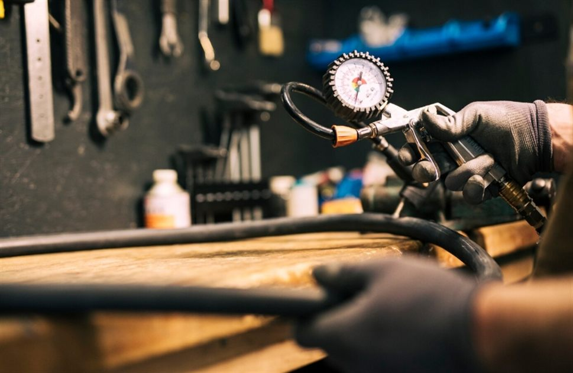

Заправка и ремонт автокондиционера в Костроме
Заправляю R134a. Перед заправкой всегда делаю опрессовку и ищу утечку — иначе фреон уходит через месяц, и вы платите второй раз. Старый газ не выбрасываю: откачиваю, чищу и возвращаю обратно — выходит дешевле, чем покупать новый. Работа в боксе на 2-м Водяном переулке, 20.

Что делаю
- Заправка фреона R134a, точный объём масла
- Откачка фреона в баллон и заправка очищенным
- Опрессовка, поиск утечек
- Вакуумирование системы перед заправкой
- Промывка системы
- Антибактериальная обработка испарителя, устранение запаха
- Замена салонного фильтра
- Замена компрессора, радиатора, трубок, датчиков
- Диагностика кондиционера: почему не холодит
Почему опрессовка обязательна
Если в системе дырка, заправка без проверки — это выброшенные деньги: фреон уйдёт за несколько недель. Поэтому сначала проверяю герметичность, потом заправляю. Если утечка есть — покажу, где именно, и предложу ремонт.
Откачка и повторная заправка
Перед ремонтом системы газ нужно слить, иначе он уйдёт в атмосферу. Откачиваю в баллон, после ремонта прогоняю через фильтр-осушитель и заправляю обратно — новый покупать не нужно.
Откачка — 1 000 ₽, обратная заправка очищенным — 1 800 ₽. Весь цикл выходит 2 800 ₽ против 3 300 ₽ с новым фреоном (600 г). Если откачанного газа не хватило, доливаю новый по 3 ₽ за грамм.
С чем приезжают
- Дует тёплым или плохо холодит
- Кондиционер включается и сразу выключается
- Посторонний запах при включении
- Шумит или свистит компрессор
- Подозрение на утечку — фреон уходит каждый сезон
- Нужна профилактика перед летом
Осень и зима — лучшее время для ремонта кондиционера: очередь меньше, а к жаре система уже готова.
Цены
Работа и фреон считаются отдельно: газ — по факту заправки. Обслуживание в боксе, без выезда.
Заправка и обслуживание
Ремонт узлов
Диагностика
Фреон считается по факту: 3 ₽ за 1 грамм, средняя заправка легкового авто — 500–700 г. Точную сумму скажу до начала работ.
Если после диагностики делаете ремонт у меня — стоимость диагностики не беру.
Как проходит заправка
- ПроверкаСмотрю систему, проверяю давление и герметичность.
- ОпрессовкаВакуум и поиск утечек. Если утечка есть — сначала ремонт.
- ЗаправкаТочный объём фреона и масла по норме для вашей модели.
- Проверка работыЗамеряю температуру на выходе из дефлекторов.
Акция «Приведи друга»
Друг получает скидку 300 ₽ на первый визит, вы — 500 ₽ на следующий ремонт. Друг называет ваш номер телефона до начала работ — так я вижу, от кого он пришёл.